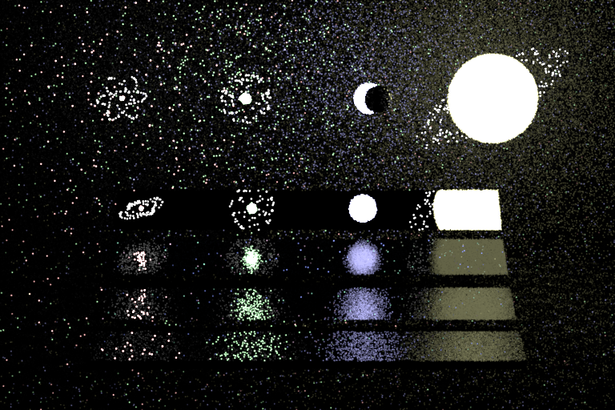
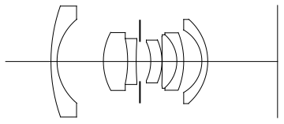

RIS & ReSTIR
==============================================================
Resampled importance sampling and ReSTIR are powerful techniques for reducing render time by squeezing more quality out of each sample per pixel. I implemented RIS (Talbot 2005) and the spatial re-use pass of ReSTIR DI (Bitterli 2017).
8 SPP render created using RIS and two passes of spatial ReSTIR
RIS Implementation Details
--------------------------------------------------------------
Relevant Files:
- `direct_mis_ris.cpp`
- `reservoir.h`
- `reservoir.cpp`
Resampled importance sampling yields higher quality samples by considering multiple candidates. Candidates are sampled using both BRDF and emitter sampling schemes and a weight for each is calculated using a proxy function. This proxy function approximates the full radiance contribution for a candidate while being far cheaper to compute (e.g. by omitting the visibility term). Each evaluated candidate is added to a reservoir data structure. After all candidates are evaluated, a single sample is drawn out of the reservoir and the full radiance contribution (now including visibility checks) is computed.
Much of the magic of RIS lies in the reservoir data structure; this data structure can be thought of as a black box that takes in a collection of samples and returns a single, high weighted, representative sample. But, miraculously, this data structure requires only storing a single sample and a running weight sum with constant time add operations. Whenever a sample $s$ is added to a reservoir $r$, it is accepted with probability $\frac{s.weight}{r.WeightSum}$. A sample is more likely to be accepted if it has a higher weight, and/or if the reservoir has a lower weight sum. If a sample is accepted, it simply overwrites the single sample stored by the reservoir. If it is rejected, it is simply ignored. In either case, the weight of the sample is accumulated into the reservoirs weight sum. While simple, this mechanism enables a large amount of information about the scene to be transferred with minimal overhead in terms of memory and computation.
RIS is relatively straightforward to implement. The reservoir class and update mechanism is delightfully simple. While some care has to be taken with respect to MIS weighting, this approach can stand alone as a single integrator in Nori.
The reservoir mechanism can be found in `reservoir.h` and `reservoir.cpp`. A standalone RIS implementation can be found in `direct_mis_ris.cpp`. However, in practice I migrated to just using my ReSTIR integrator defined in `direct_restir.cpp` with the number of spatial passes set to 0. In this special 0 pass case, ReSTIR and RIS are equivalent.
ReSTIR Implementation Details
--------------------------------------------------------------
Relevant Files:
- `render.cpp`
- `scene.h`
- `scene.cpp`
- `direct_restir.cpp`
- `integrator.h`
- `reservoir.h`
- `reservoir.cpp`
ReSTIR builds on top of RIS using a powerful observation - neighboring pixels are correlated. More specifically, the samples generated by a pixel carry useful signal that can be exploited by neighboring pixels.
As a conceptual simplification, consider direct illumination with only emitter sampling and a single sample per pixel. Consider a surface with one nearby emitter directly overhead and 99 emitters far away at glancing angles. With emitter sampling, 99% of the samples will find emitters with little to no contribution yielding a very dark scene. RIS can help here as a high candidate number (say 32) will greatly increase the chance of at least one sample finding the nearby light, but many pixels will still be too dark. ReSTIR allows pixels to incorporate samples from their neighbors. If each pixel considers 4 neighbors, the chance that at least one of the neighbors sampled the nearby light increases substantially.
In terms of implementation, this algorithm requires some more invasive modifications than RIS.
First, rendering needs to be performed in multiple passes. First, a sample generation pass runs RIS, populating one reservoir for each pixel. Second, a fixed number of spatial passes is run. Each spatial pass involves pixels combining their reservoirs with a random subset of the neighbors, sampled uniformly from a fixed radius. Third, a final render pass is performed that evaluates the output sample for every reservoir producing the final radiance values. In Nori, this involved extensive modification to `render.cpp` to perform multiple passes over the entire screen, rather than just the single standard `Li()` pass. See `render.cpp` for details of how this rendering loop is structured. Note that this behavior is toggled via a MULTIPASS_RENDER boolean to preserve backwards compatibility with existing integrators. The behavior for each pass is defined in `direct_restir.cpp`.
Additionally, reservoirs could no longer be tracked at the integrator level as with RIS; one pixel needs to access those of its neighbors. Thus, two reservoir buffers (a primary and a temporary) are added to the scene class enabling universal access. The sample generation pass populates reservoirs in the primary buffer. Each spatial reuse pass reads from the primary buffer and writes to the temporary buffer. The primary buffer is overwritten with the contents of the temporary buffer after each spatial pass. Each pixel reads from the reservoirs of several neighbors, but only writes to its own. Thus, all passes are individually parallelizable, leveraging the existing Block infrastructure provided in Nori. See `scene.cpp` for functions pertaining to reservoir buffer management.
In the original Bitterli paper, additional passes for visibility and temporal reuse are included. For visibility, I incorporate a check at the end of sample generation to avoid the introduction of another top level full screen pass. This check simply zeroes out the weight for the reservoirs sample out if the sample is not visible. While this check does have a cost, it is worthwhile to ensure that high weight occluded samples do not propagate to neighbors. I do not include a temporal pass. The original ReSTIR implementation was aimed at real time rendering, enabling a generalization of the notion of a neighborhood to temporal neighbors (e.g. previous frames) beyond just spatial neighbors. For Nori, only a single frame is rendered so this kind of re-use is not possible in the same way. However, a "temporal" pass could be added that propagated samples from previous SPPs. This would be a nice extension but is not currently implemented.
Some care does have to be taken when borrowing samples. Specifically, when "borrowing" a sample from a nearby pixel, all that is borrowed is the emitter specific information. The scene point specific information remains specific to the origin pixel. See `reuseSpatially()` and `combineReservoirs()` in `direct_restir.cpp` for a closer look at how this is performed.
Note that while my implementation does provide a substantial speedup for comparable quality, it is not optimized for runtime. Several improvements for runtime are possible, but would require a much more invasive overhaul of Nori. Additionally, my reservoir class is "overkill" in terms of the data it stores. This is partially for my own interpretability, and partially to simplify interactions with existing Nori interfaces. In a dedicated real time implementation, the size of an individual sample could be decreased substantially.
Validation
--------------------------------------------------------------
For validation, I explore RIS, ReSTIR and a Monte Carlo baseline across a variety of parameters. My comparison focuses on image quality relative to sample count, but I will include a discussion of execution time at the end.
The primary objective of these techniques is to squeeze as much quality as possible out of a single SPP. Lets start with a monte carlo baseline and see what one SPP gives us.
1 SPP render with a MIS direct illumination integrator
As expected, 1 SPP does not give much. Now, lets introduce RIS. RIS gives two parameters to tune: $M_{area}$ and $M_{brdf}$ denoting the number of candidates evaluated using emitter and brdf sampling respectively. The figure below shows the results of a variety of combinations of these values alongside the same baseline image as above.

1 SPP renders with a monte carlo baseline and various RIS parameter combinations
RIS is able to get far more out of a single sample. But, there is still a large amount of high frequency noise, and many dark pixels. Lets keep the parameters fixed to $M_{area}=256$ and $M_{brdf}=32$ and see what introducing a single spatial pass of ReSTIR can get us.
ReSTIR adds three new parameters to tune. Number of neighbors N, neighborhood radius R, and number of spatial passes P. Optimizing these parameters is a challenging problem in its own right that depends on scene, constraints and goals. Note that my experiments generally use higher neighbor counts and smaller radii than other ReSTIR implementations. By not having a temporal pass, this becomes both possible and necessary. Possible, because I mostly (assuming P small) avoid samples cycling back and forth leading to correlation artifacts (a common issue for ReSTIR). Necessary, because my reservoirs are missing the "seed" of a good sample normally provided by the previous frame.
RIS versus various ReSTIR parameters for $M_{area}=256$ and $M_{brdf}=32$. All 1 SPP. All ReSTIR use $P=1$
Note that bright samples seem to "spread" filling in dark patches in between them. As the radius and number of neighbors grows this becomes more pronounced. Rather than increasing the radii, a similar effect can be achieved by introducing more spatial passes. Lets zoom in on the $N = 16, R=5$ case and explore the effect of introducing more spatial passes.
Effect of multiple ReSTIR passes for $M_{area}=256$, $M_{brdf}=32$, $N=16$ and $R=4$. All are 1 SPP
Note that, as with increasing the neighbor count and radius, introducing more passes generally has a smoothing effect, spreading out bright samples. There are still isolated pixels which failed to find a good light sample, but running a very small number of SPP to average these out yields nice results.
ReSTIR with $M_{area}=256$, $M_{brdf}=32$, $N=16$, $R=4$ and $P=2$.
Now, lets focus on rendering time. Consider the three renders below.
- ReSTIR at 32 SPP with $M_{area}=32$, $M_{brdf}=8$, $N=8$, $R=3$ and $P=2$ with a render time of 22.4 seconds.
- RIS at 128 SPP with $M_{area}=32$, $M_{brdf}=8$ with a render time of 37.5 seconds.
- Monte Carlo baseline at 1024 SPP with a render time of 43.7 seconds.
RIS and ReSTIR compared to a Monte Carlo Baseline.
Note that while ReSTIR does achieve good results in much less time, it makes some tradeoffs to achieve this. See the bias discussion below.
Discussion
--------------------------------------------------------------
While RIS and ReSTIR present a very powerful paradigm for improving render quality in fewer SPP, there are several limitations and considerations.
**Bias**
While RIS is perfectly unbiased, my implementation of ReSTIR is not. ReSTIR *can* be made to be unbiased – the original paper devotes a large section to this. However, to remain unbiased, far more rays must be traced along the way. While possible, this is generally not done in practice. Instead, the bias is accepted as a tradeoff for far faster convergence time. Some of the resulting differences can be seen in the three way comparison above.
**Rendering Time**
Dzespite using fewer samples, RIS and ReSTIR spend far more time per sample. This is particularly apparent in my implementation; the parallelism structure presented by the block abstraction was reused. While effective for rapid prototyping, this class is optimized for a single, more expensive screen pass, instead of several lightweight ones. Thus, the performance of the system could be improved upon substantially if more care was put into designing efficient parallelism for a large number of lightweight full screen passes.
Beyond improving parallelism, the quality/render time ratio could be improved by introducing a "temporal" pass that leverages samples from the previous SPP pass.
**Artifacts**
ReSTIR acts as a deblurring operator in some regard. It smooths out high frequency noise by spreading out high quality samples. However, it still ends up with some degree of "splotchy" artifacts. While these artifacts may be better/less distracting visually to a human eye than high frequency noise, they are not better for the current generation of denoisers. Denoisers are fundamentally optimized for (and quite good at) removing high frequency monte carlo noise. But, the artifacts introduced by ReSTIR are unique and more challenging to resolve with a denoiser. Future research can and should explore dedicated denoising approaches for ReSTIR.
References and Relevant Links
--------------------------------------------------------------
- [Talbot's Original Resampled Importance Sampling paper](https://scholarsarchive.byu.edu/cgi/viewcontent.cgi?article=1662&context=etd)
- [Bitterli et. all's original ReSTIR paper](https://benedikt-bitterli.me/restir/bitterli20restir.pdf)
- [Gentle Introduction to ReSTIR Siggraph Course](https://intro-to-restir.cwyman.org/)
Realistic Camera Model
==============================================================
By default, Nori uses a perspective pinhole camera. While simple to implement, this model is unrealistic; images have an artificial aesthetic and are lacking several features of "real" captured images such as lens distortion, depth of field, and vignetting. To improve the visual quality of our renders, and enable these features, I implemented a realistic camera model based on the PBRT V3 implementation.
512 SPP rendering using the 50mm D-Gauss Lens
Implementation Details
--------------------------------------------------------------
Relevant Files:
- `realistic.cpp`
- `camera-helpers.h`
Realistic cameras are defined by a series of lenses, each of varying diameters. An example of a lens definition is provided in the table below with the corresponding diagram.
Curvature Radius |Thickness |Index of Refraction |Aperture Diameter|
--------------|--------------|--------------|--------------|
35.98738 |1.21638 |1.54 |23.716 |
11.69718 |9.9957 |1.00 |17.996 |
13.08714 |5.12622 |1.772 |12.364 |
-22.63294 |1.76924 |1.617 |9.812 |
71.05802 |0.8184 |1.00 |9.152 |
0 |2.27766 |0.00 |8.756 |
-9.58584 |2.43254 |1.617 |8.184 |
-11.28864 |0.11506 |1.00 |9.152 |
-166.7765 |3.09606 |1.713 |10.648 |
-7.5911 |1.32682 |1.805 |11.44 |
-16.7662 |3.98068 |1.00 |12.276 |
-7.70286 |1.21638 |1.617 |13.42 |
-11.97328 |0.00 |1.00 |17.996 |
Wide-angle 22mm lens definition [provided by PBRT](https://pbr-book.org/3ed-2018/Camera_Models/Realistic_Cameras)

Cross section of the Wide-angle 22mm lens [provided by PBRT](https://pbr-book.org/3ed-2018/Camera_Models/Realistic_Cameras)
Given a lens definition file, rays are traced from a simulated film plane, through each lens element, and then into the scene. To implement this, the lens definition is parsed into a vector of custom structs containing the information of each element. Ray tracing is performed by iteratively stepping through this vector, localizing each element along the z axis by accumulating thicknesses. For each element, the intersection point is found based on the radius. If this intersection point is within the aperture for the element, the ray origin is updated to the intersection point and tracing continues. If not, the ray "dies" inside the lens system and returns black.
Two additional details arise. First, the lens must be focused. The top level xml interface enables the user to provide a focus distance. Using this focus distance, rays are traced through the lens to identify the cardinal points of the system. The "thickness" of the lens element closest to the film plane is adjusted such that the focal plane falls at the desired distance. Second, pure Monte Carlo sampling of this system would be very inefficient as a large number of rays would not escape the lens system. For a given point on the film plane, only a small "exit pupil" on the first element will actually result in a ray escaping the len system. After focusing, sampling is performed along the x axis to localize this exit pupil for a series of points. Because the exit pupil is rotationally symmetric, these sampled exit pupils can be rotated to get an exit pupil for any other point in the film plane. After this preprocessing step, rays are only generated from film plane points to their corresponding exit pupils such that fewer rays are wasted.
This system naturally yields several realistic camera effects. Depth of field occurs whe scene points in front of or behind the focal plane map to multiple film plane points, causing blurring. Lens distortion occurs due to non-projective mapping from scene to film caused by the geometry of the lens elements. A slight border darkening (vignetting) occurs because rays originating closer to the edges of the film plane are more likely to collide with the aperture stop (element with curvature radius 0) or the edges of the camera housing (e.g. by intersecting a lens element beyond the specified radius) than rays originating in the center of the film plane.
These effects not only occur, but are also highly controllable. By using different lens definition files, modifying the files themselves, or modifying various hyper parameters (e.g. field of view, focus distance, focal length, etc), very different visual effects can be obtained. The figure below demonstrates the same scene rendered using four different camera models.
The CGL Triangle scene rendered with four different lens definitions provided by PBRT
These four images demonstrate all of the described features clearly. Vignetting is clearly visible in the D-Gauss 50mm render. Depth of field is visible in all realistic renders (note the gradual blurring in the distant reflections) and most notable in the D-Gauss 50mm render. Lens distortion is most notable in the Fisheye 10mm render.
As one additional feature, I implement a pseuedo "ISO" argument. This argument behaves identically to the exposure slider in the Nori GUI, but allows reproducibility by fixing it in code. Adding this parameter also adds to the experience as adjusting a render framing begins to feel eerily similar to using a camera in the real world.
Validation
--------------------------------------------------------------
I validate my implementation against PBRT V3.
Below shows four images of the same scene rendered with the Nori perspective camera (upper left), the Nori realistic camera using the D-Gauss 50mm lens (lower left), the PBRT v3 perspective camera (upper right) and the PBRT realistic camera using the D-Gauss 50mm lens (lower right).
PBRT's and Nori's perspective and realistic camera comparison
Discussion
--------------------------------------------------------------
While this model provides substantial artistic control and takes a large step toward more realistic models, it is still simplified in some ways. For example, effects such as lens flares are not possible; these effects depend on more complex light paths inside the lense system (namely total internal reflection) which this model ignores. As another example, motion blur is not possible; this feature depends on some model for shutter speed which is currently not implemented.
Additionally, this model does increase rendering time, especially for more complex lenses. Each ray must be traced through several lens interactions before even entering the scene. Furthermore, some rays never escape the lens system itself, "wasting" some compute to yield no radiance.
We ultimately chose to use a modified version of the PBRT fisheye lens to achieve the distortion visible in our final scene.
References and Relevant Links
--------------------------------------------------------------
- [PBRT V3 Chapter 6.4](https://pbr-book.org/3ed-2018/Camera_Models/Realistic_Cameras)
- [PBRT V3 `realistic.cpp` source code](https://github.com/mmp/pbrt-v3/blob/master/src/cameras/realistic.cpp)
Intel Open Image Denoise Integration
==============================================================
To further reduce rendering time, we integrated with the Intel Open Image Denoiser. This toolkit takes a noisy rendering output and intelligently removes high frequency noise.
16 SPP MIS path tracing rendering before and after applying denoising with IOID
Implementation Details
--------------------------------------------------------------
Relevant Files:
- `albedo.cpp`
- `bsdf.h`
- `denoise.py`
- `render_and_deoise.py`
The denoiser itself is a standalone package. However, in order to achieve the best performance, normal and albedo values must be passed along with color values. While these can be layered into a single rendering/exr file, we used the existing normals integrator and a newly created albedo integrator to produce separate exr files. I created a python script that dispatches all three rendering jobs, converts the exr files to the pfm format expected by OIDN, runs the denoising, and saves a single denoised image. With a bit of care in file naming conventions, this enables very fast and convenient denoising as a post processing step to any render.
Validation
--------------------------------------------------------------
Validation can be done visually.
This figure shows an example output from our normal and albedo integrators.
8 SPP render created using RIS and two passes of spatial ReSTIR
The figure below shows the denoising results for 16 and 64 SPP renders.
Denoising for 16 and 64 SPP renders
The figure below compares the same two denoised results to a 1024 SPP Monte Carlo baseline.
Denoised images compared to a Monte Carlo baseline
Discussion
--------------------------------------------------------------
Overall, this package provided a powerful way to get visually good results without waiting on very high SPP times. However, for our final render, this feature was not the most useful for two reasons. First, given the HPC integration, we were able to run very high SPP renders, so little to no denoising of the final product was necessary. Second, we did not modify our albedo and normal map integrators to properly handle volumes. So, we only denoise with a pixel level pass, excluding the albedo and normal maps. The figure below shoes the final rendering before and after applying this pixel level denoising.
Our final render before and after denoising
References and Relevant Links
--------------------------------------------------------------
- [Intel Open Image Denoise Github](https://github.com/RenderKit/oidn)
- [Intel Open Image Denoise Webpage](https://www.openimagedenoise.org/)
Euler HPC Integration
==============================================================
Integrating with the ETH Euler Cluster enabled substantial speedups in rendering time.
An example rendering from the Euler cluster produced at 128 SPP in 3.03s using 24 cores using the MIS renderer implemented in Project 3
Implementation Details
--------------------------------------------------------------
Relevant Files:
- `HPC_rendering/*`
This task required cloning our repository onto the Euler cluster, configuring the needed modules and running the desired jobs. All key workflows were first performed manually, and then automated with scripts to enable easier experimentation.
Validation
--------------------------------------------------------------
For validation, I include a screenshot of two running jobs with their `squeue` status and log files.
Two simultaneous jobs running on Euler through the VS Code SSH interface
I also time a variety of core counts to identify the optimal choice. For each core count, the rendering of the image above was timed 10 separate times. The table and figure below show the results.
Cores |Mean Time |Std Dev |Median Time |IQ Range |
---------------|---------------|---------------|---------------|---------------|
1 |34.399 |9.535 |37.035 |0.019 |
2 |17.666 |4.899 |19.023 |0.001 |
4 |9.316 |2.582 |10.029 |0.007 |
8 |5.904 |1.615 |6.109 |0.278 |
16 |3.597 |1.056 |4.022 |0.006 |
24 |2.524 |0.633 |3.023 |0.999 |
32 |2.806 |0.778 |3.021 |0.001 |
40 |2.738 |0.801 |3.024 |0.001 |
48 |1.881 |0.521 |2.023 |0.002 |
Timing statistics for various core counts across 10 trials
The median and IQ ranges from the table plotted visually
Discussion
--------------------------------------------------------------
Increasing core count offers a substantial speedup up to 24 cores. However, from 24 to 40 cores, execution time increases slightly. At 48 cores, performance again improves, yielding the fastest time of all. Higher core counts could not be tested due to cluster restrictions. Presumably, this indicates that the division of the rendering computation can be efficiently divided between 24 or 48 cores, but that the division is less efficient for 32 and 40 cores. Thus, naively increasing core count is not guaranteed to offer better performance; to optimize core count, small, low SPP experiments are worthwhile to find the correct value empirically. Alternatively, closer study of the underlying hardware and parallelism could offer a direct solution.
For the rendering competition, this integration proved invaluable. First, because it gave a clear speedup over our local machines. Second, because it allowed us to dispatch multiple jobs in parallel, and build a backlog of jobs to run as cores became available. This allowed us to perform miniature grid searches over various scene parameters, efficiently exploring the visual results at moderate SPPs.
Our final render took 3 hours and 12 minutes for a 4k rendering at 4096 SPP.
References and Relevant Links
--------------------------------------------------------------
- [ETH Scientific Computing Wiki](https://scicomp.ethz.ch/wiki/Euler)
Rough and Smooth Conductors
==============================================================
In order to model metallic surfaces, I implemented smooth and rough conductors. I chose to use a Disney BRDF inspired approach to this implementation, implementing the roughness, subsurface and metallic parameters. While slightly less realistic for some materials, this approach gives the benefit of intuitive artistic control and close alignment with the "principled" BRDF in both Blender and Mitsuba.
Example scene using my BSDFs for metallic materials (plus one dielectric for fun)
Implementation Details
--------------------------------------------------------------
Relevant Files:
- `disney.cpp`
I create a new subclass of `BSDF` named `Disney` that contains all needed functionality. This class takes in an `m_metallic` parameter, an `m_roughness` parameter and an `m_subsurface` parameter.
Internally, this class implements a private `*_eval()`, `*_pdf()` and `*_sample()` function for both diffuse and metallic. At the top level `eval()` and `pdf`, a diffuse and metallic term are computed. The sum of the two terms, weighted by the `m_metallic` parameter is returned. For the top level `sample()` function, a stochastic check based on `m_metallic` determines whether diffuse or metallic will be sampled, calls the underlying `*_sample()` method, and returns.
For diffuse, I implement three terms. First, a "standard" diffuse term that aligns with the original `diffuse.cpp`. Second, a retro reflection term controlled by the surface roughness. Third, a fake subsurface scattering based on the original 2012 Disney BSDF by modifying the Lommel-Seeliger law. Although subtle, this term gives a nice subsurface effect without the complexity of true subsurface scattering. For evaluation, I add the standard diffuse and retro, scale by 1 - `m_subsurface`, and add to the subsurface term scaled by `m_subsurface`. For sampling, I simply use a cosine hemisphere approach.
For metallic, I use a Cook-Torrance microfacet BRDF for evaluation. This microfacet formulation combines a Schlick approximation Fresnel term, a GGX normal distribution, and an occlusion factor using the Smith model. Samples are generated according to the GGX distribution using the "Sampling the GGX Distribution of Visible Normals" approach proposed by Eric Heitz. This sampling approach is both simple to implement and efficient computationally.
Validation
--------------------------------------------------------------
To validate, I compare my implementation to Mitsuba. To verify correctness, I first compare my implementation to their principled BRDF. For the sake of understanding the tradeoffs with my approach, I then compare my implementation to their rough and smooth BRDFs, highlighting the pros and cons of each.
First I compare my implementation to the Mitsuba principled BRDF, focusing on the roughness and metallic terms.
My Disney BSDF compared to the Mitsuba Principled BSDF. Rows vary the roughness parameter with values of 0.9, 0.5, 0.1 for top, middle and bottom respectively. Columns vary the metallic parameter from 0.0 to 1.0 in 0.25 increments.
Very slight differences do appear at grazing angles (visible on upper edge of the bottom middle sphere for example). These differences are due to Mitsuba requiring a non-zero specular component for metallic surfaces. I make this term very small (0.001) for all metallic spheres above to minimize its impact while still giving valid results. This yields near identical results, but they do not match perfectly. At either extreme (purely metallic or purely diffuse) my results are identical up to noise.
Next, I compare the "Ag" material in their smooth conductor BSDF to an approximated version of the same metal from my BSDF.
My Disney BSDF compared to the Mitsuba smooth conductor BSDF
For perfectly shiny metals, my implementation yields similar results to the Mitsuba conductor BSDF. However, theirs gives a slightly dimmer, arguably more "realistic" physically based look.
Similarly, we can look at the same material with their rough conductor BSDF.
My Disney BSDF compared to the Mitsuba rough conductor BSDF
Again, similar results can be achieved, but the appearance is clearly different. More tuning of hyper parameters can yield a closer match, it is hard to replicate exactly.
As a final comparison, I validate that my diffuse term functions the same as Mitsuba. Below, I compare my implementation and Mitsuba for purely diffuse BRDFs for both the standard + retro reflection diffuse term and the fake subsurface reflection term separately.
Comparing diffuse renders between my Disney BSDF and the Mitsuba Principled BSDF
Discussion
--------------------------------------------------------------
For our purposes, this approach was highly effective. It gave us complete artistic control to construct our materials in Blender and transfer to Nori without changes. However, as shown above, this is not a perfect match for the realistic smooth and rough conductors provided by Mitsuba. While a particular look can generally be replicated, it will not be as true to the physical properties of the material as the Mitsuba counterpart. In our somewhat surreal render, perfect realism was not the goal, and we did not have specific materials we aimed to replicate. In other settings with different constraints, the dedicated smooth/rough conductors may be a better option.
References and Relevant Links
--------------------------------------------------------------
- [UCSD CSE271 Assignment 1 Handout](https://cseweb.ucsd.edu/~tzli/cse272/wi2023/homework1.pdf)
- [Presentation and Code for Sampling the GGX Distribution of Visible Normals by Eric Heitz](https://jcgt.org/published/0007/04/01/slides.pdf)
- [Mitsuba Principled BSDF implementation](https://github.com/mitsuba-renderer/mitsuba3/blob/master/src/bsdfs/principled.cpp)